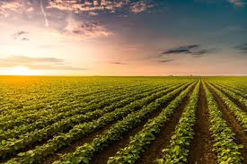

Agricultura
O campo fornece alimentos e matérias-primas para a cidade, enquanto a cidade oferece tecnologia, mercado consumidor e serviços para o campo. Essa conexão é fundamental para o equilíbrio e desenvolvimento da sociedade.
"Evolução Do Campo Para A Cidade "> A conexão do campo para a cidade é muito importante, no campo encontramos a natureza, plantações e animais.
As pessoas que vivem lá costumam trabalhar na agricultura e na criação de gado, Elas produzem alimento frescos, como verduras, frutas verduras e leite.
Na cidade as pessoas vivem em predios e trabalham em escritorios, lojas e fábricas, a cidade é cheia de movimento, com muitas opções de lazer e cultura.
Porém muitas vezes as pessoas da cidade dependem dos produtos que vêem no campo.
essa conexão do campo a cidade é muito bom que enquanto o campo fornece alimentos e recursos naturais, a cidade oferece serviços e oportunidades de emprego.
Elas formam um equilibrio que beneficia todas as pessoas.
A conexão do campo para a cidade é fundamental em nossas vidas.
